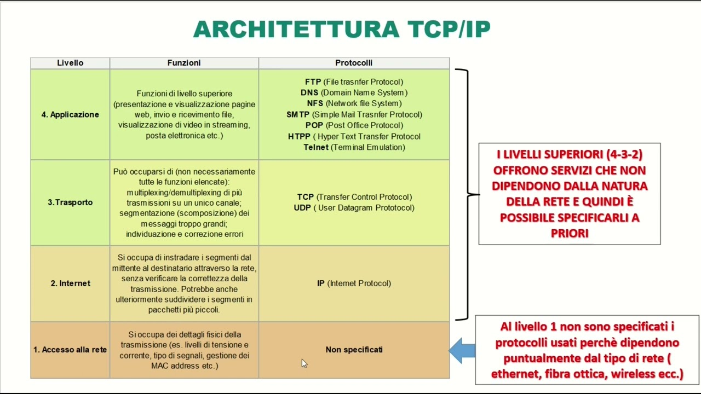

Che cosa sono le socket?
Una socket è un'interfaccia software che consente la comunicazione tra due dispositivi in una rete. In altre parole, una socket è un'interfaccia che consente a due applicazioni, che si trovano su dispositivi diversi, di scambiarsi dati tramite una rete, come Internet o una rete locale (LAN). Le socket sono utilizzate per stabilire e gestire connessioni tra client e server, che possono essere in esecuzione su computer diversi, permettendo loro di comunicare tra di loro.
Come funziona una socket?
Le socket operano seguendo un modello client-server:
- Server: Il server crea una socket, la associa a un indirizzo IP e una porta, e si mette in ascolto delle richieste in arrivo. Quando un client si connette, il server accetta la connessione e inizia a scambiare dati.
- Client: Il client crea una socket, specifica l'indirizzo del server e la porta, e avvia la connessione. Una volta stabilita, i dati possono essere scambiati.
Protocolli comuni per le socket
Le socket utilizzano protocolli standard per il trasferimento dei dati:
- TCP (Transmission Control Protocol): Utilizzato per comunicazioni affidabili e ordinate. È ideale per applicazioni web, email e trasferimento file.
- UDP (User Datagram Protocol) : Utilizzato per comunicazioni veloci ma non garantite. È usato in applicazioni come streaming e giochi online.
Architettura delle socket
Il processo di comunicazione tramite socket si basa su:
- Creazione della socket: Il server e il client creano una socket.
- Collegamento: La socket del client si connette alla socket del server utilizzando un indirizzo IP e una porta.
- Scambio di dati: Una volta stabilita la connessione, i dati possono essere scambiati.
- Chiusura della connessione: La comunicazione termina quando una delle due parti chiude la socket.
Schema di una comunicazione Client-Server tramite socket
Esempi di applicazioni reali
Le socket sono fondamentali per diverse applicazioni quotidiane, tra cui:
- Applicazioni Web: I browser utilizzano socket per connettersi ai server web.
- Chat: Le applicazioni di messaggistica come WhatsApp e Telegram usano socket per trasferire messaggi.
- Streaming: Servizi come Netflix e Spotify utilizzano socket per lo streaming di video e audio.
- Giochi Online: Le socket gestiscono la comunicazione tra i giocatori e il server del gioco.
Socket e la Pila TCP/IP
Le socket lavorano principalmente al livello di trasporto nella pila TCP/IP. Questo livello gestisce il trasferimento dei dati tra dispositivi, fornendo protocolli come TCP e UDP per garantire una comunicazione affidabile o veloce.
Schema della pila TCP/IP
Vantaggi e Svantaggi delle socket
- Vantaggi: Flessibilità, efficienza nella comunicazione e supporto per vari protocolli.
- Svantaggi: Complessità nella gestione degli errori e nella configurazione di connessioni sicure.